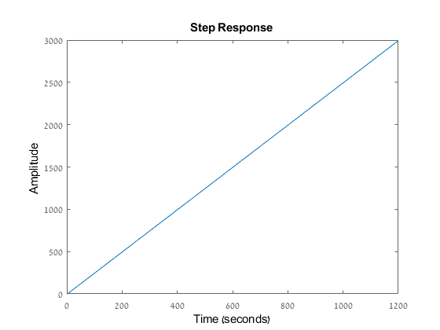

Contents
Student ID
ID = 316098052; disp(ID)
316098052
1 Manipulator control
2. Response of the closed-loop system to a step input
A = [0 1;0 -0.4]; B = [0 1]'; C = [1 0]; D = 0; sys = ss(A,B,C,D); test = tf([0 1],[1 0.4 0]); pzmap(test)
step(test)
4. Response of the state variable feedback system to a step input
A_k = [0 1;-18.4 -5.9];
B = [0 1]';
C = [1 0];
D = 0;
sys = ss(A_k,B,C,D);
% pzmap(sys)
step(sys);
stepinfo(sys)
ans =
struct with fields:
RiseTime: 0.4873
SettlingTime: 1.3984
SettlingMin: 0.0491
SettlingMax: 0.0571
Overshoot: 5.0977
Undershoot: 0
Peak: 0.0571
PeakTime: 1.0147
syms L1 L2 LAM A = [0 1;-7 -2]; L = [L1 L2]'; C = [1 4]; O = LAM*eye(2)-A - L*C; de = det(O);
5 Pole-placement algorithm for state-space model
clear check = myPolePlacement(magic(5), [1;2;3;4;5], [-1, -2, -3, -4, -5]) K = place(magic(5), [1;2;3;4;5], [-1, -2, -3, -4, -5]) function [out] = myPolePlacement(A, B, p) s = size(A); K = sym('k',[1 s(1)]); A_s = A-B*K; p2 = poly(p); poli = charpoly(A_s); sol = poli == p2; sol_k = solve(sol , K) A = struct2cell(sol_k); out = double(cat(2,A{:})); end
sol_k =
struct with fields:
k1: [1×1 sym]
k2: [1×1 sym]
k3: [1×1 sym]
k4: [1×1 sym]
k5: [1×1 sym]
check =
10.5062 10.6291 3.5642 -2.7071 9.6742
K =
10.5062 10.6291 3.5642 -2.7071 9.6742